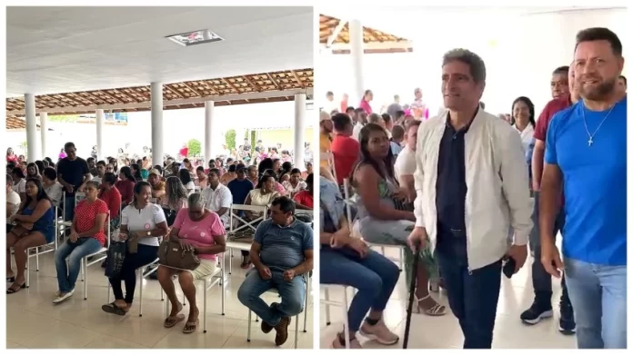

Deputado Raimundo Costa garante obras do novo Mercado do Peixe para Valença e entrega de ambulância para Serra Grande Leia mais
 No Norte baiano, Raimundo Costa reforça mobilização contra a MP que altera regras do seguro-defeso Leia mais